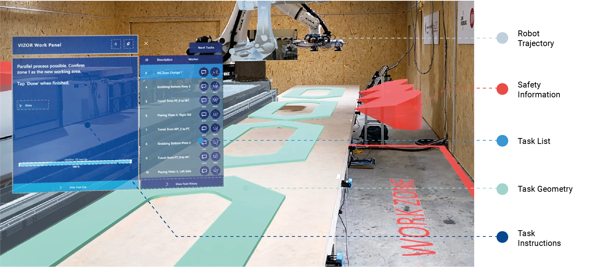

An implementation and evaluation of large-scale multi-user human–robot collaboration with head-mounted augmented reality

Authors. Xiliu Yang, Felix Amtsberg, Benjamin Kaiser, Lior Skoury, Tim Stark, Simon Treml, Nils Opgenorth, Aimée Sousa Calepso, Michael Sedlmair, Thomas Wortmann, Alexander Verl, Achim Menges
Venue. Advanced Engineering Informatics (2025)
Abstract. Human–robot collaboration (HRC) offers promising potential for more flexible and sustainable production practices in architecture and construction. This requires HRC setups to scale up from light-payload collaborative robots to conform with the scale of building construction while considering the safety and teamwork culture for workers. This research proposes a system for large-scale multi-user HRC using head-mounted augmented reality (AR) devices. To achieve this, we contribute three methods that work in conjunction: (1) an AR system that enables multiple users to share tasks and work together with robots; (2) a dynamic human task allocation engine that reacts to the changing production teams and task types; and (3) a safety zone generation and allocation method to configure human collaboration in shared space with large-scale robots. The system is evaluated using a case study of prefabricated timber cassettes combining discrete event simulations, a user study and a fabrication process demonstrator with an industry partner.